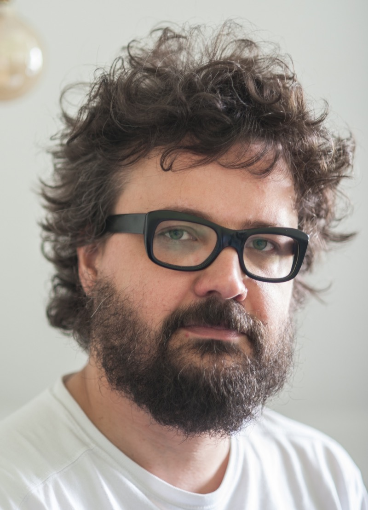
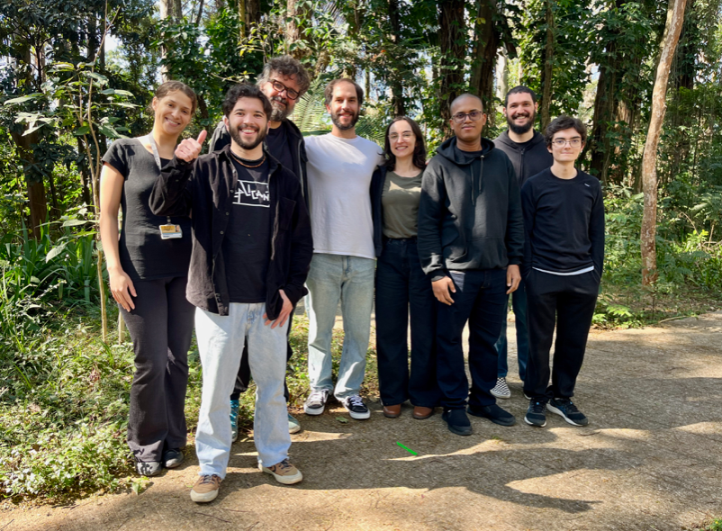
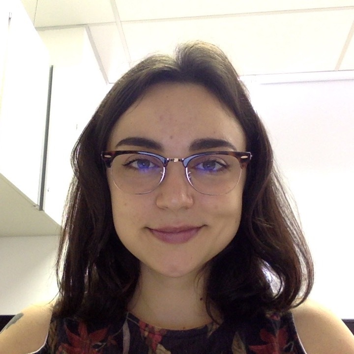
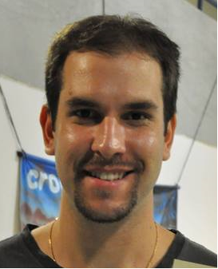
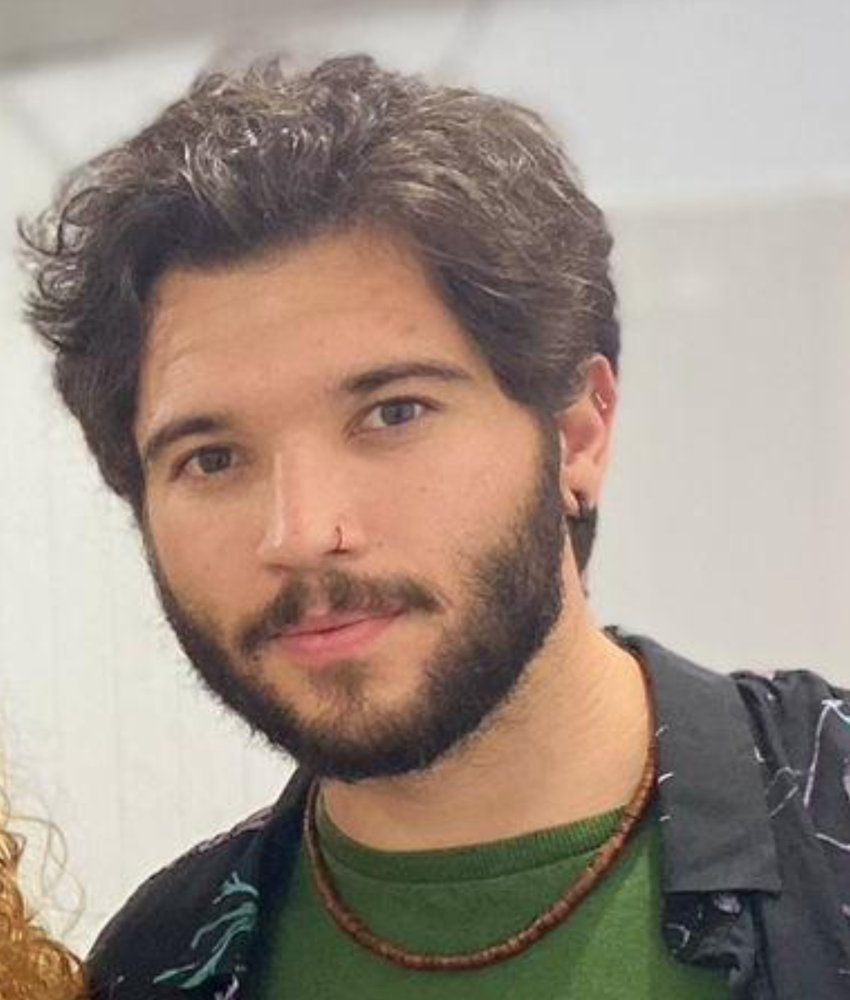
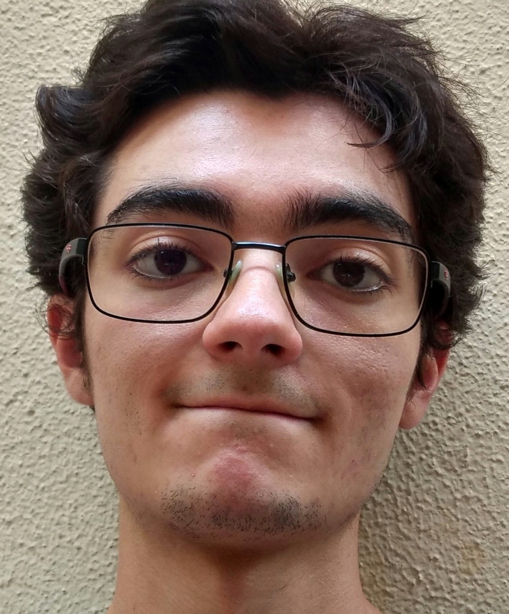
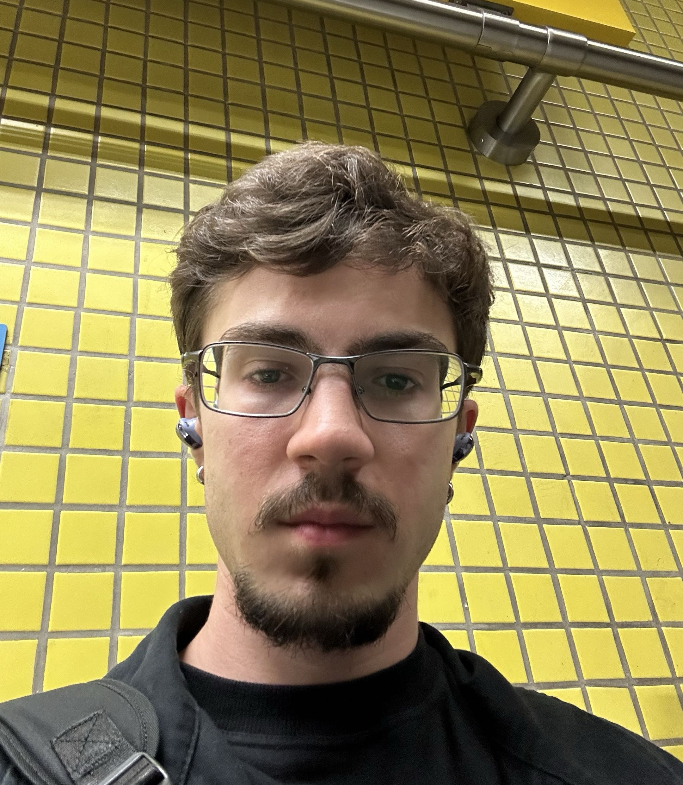

people
the people behind activislab.
we are a collaborative group studying how visual perception and neural activity unfold during active behaviour.

people
the people behind activislab.
our team brings together researchers at different career stages to study visual perception, attention and active vision.
current members




master
bruna a. bernardes

master
joão borges
master
felipe r. souza

master
lucas p. donaire
alumni

undergraduate student
isabella pitorri
mz
undergraduate student
melissa hongjin song zhu
mg
collaborators
research across institutions.
we work with collaborators in brazil and abroad on visual neuroscience, cognition and active vision.
pascal fries
ernst strüngmann institute for neuroscience · frankfurt am main, germany
martin vinck
ernst strüngmann institute for neuroscience · frankfurt am main, germany
sérgio neuenschwander
brain institute, federal university of rio grande do norte · natal, brazil
andré m. cravo
center for mathematics, computation and cognition, federal university of abc · são bernardo do campo, brazil
andré frazão helene
institute of biosciences, university of são paulo · são paulo, brazil
gilberto f. xavier
institute of biosciences, university of são paulo · são paulo, brazil